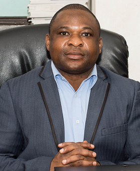

UG |
DEPARTMENT OF COMPUTER SCIENCE
UG |
DEPARTMENT OF COMPUTER SCIENCE
Dean's profile
Prof. Sandow Mark Yidana is a Professor of Hydrogeology with specialization in Numerical Modelling of groundwater flow and solute transport. He also has expertise in Geostatistics and the Advanced Statistical Applications in the Earth Sciences. Prof. Yidana holds a PhD in Environmental Management from Montclair State University in the United States of America. He has published over 65 articles in International Peer Review Journals and other outlets of significant global impact and has been copiously cited by his peers globally. Prof. Yidana has won a number of grants and is currently the Principal Investigator and Coordinator of a grant funded by the Danish International Development Agency, DANIDA, for hydrogeological research in the White Volta Basin. On this project, Prof. Yidana leads and coordinates the research of scientists from six other institutions (Geological Survey of Denmark and Greenland, GEUS, University of Copenhagen, Aarhus University, Council for Scientific and Industrial Research (Ghana), Hydronomics Limited, and the Center for Savannah Ecosystem Research), and is the Principal Supervisor of four PhD students on the Project. Since August 2009, Prof. Yidana has supervised and co-supervised over 40 students at the graduate level. He is a co-Investigator on the Multi-scale Flood Monitoring and Assessment Services for West Africa (MIFMASS) program which is funded by the African Union in collaboration with the European Union under the GMES African program. This project will principally use remotely sensed data to assess and develop flood monitoring and management system for five basins in five West African countries (Ghana, Nigeria, Burkina Faso, Benin, and Ivory Coast). It is led by the Center for Space Science and Technology Education at the Obafemi Awolowo University in Ife, Nigeria. In Ghana, the focus is on the Black Volta Basin. Prof. Yidana is a collaborator on the Pathways to Equitable Healthy Cities program which is led by the Imperial College of London. On this project, he works with the Water and Sanitation team which assesses sanitation and water resources infrastructure in large urban areas. In Ghana, the project is focused on the Greater Accra Metropolitan area. Prof. Yidana is jointly supervising a PhD student while providing intellectual contributions in the areas of policy and water quality and distribution issues within the projects catchment areas.
He currently oversees the research of 6 PhD students in the Department of Earth Science and cognate departments in the University of Ghana. Prof. Yidana has performed several consultancy services and has contributed to the development of key documents and reports including Integrated Water Resources Management Plans (IWRM), Investment Strategy Documents for Water Resources Infrastructure, Decision Support Systems for assessing the impacts of mine dewatering on groundwater resources, among others. He has also developed similar documents for the Black Volta and Oti Basins with funding from the Climate Adaptation Fund. Working with Golder Associates, Prof. Yidana contributed to the development of 3D transient groundwater flow models which were used for assessing the impacts of mine dewatering on community boreholes/water supply systems in Newmont’s Ahafo and Akyem mines. He has consulted for other organizations such as Conservation Alliance, United Nations Development Program (UNDP), and Access Development on water resources and sanitation issues especially in rural Ghana. He has participated in several international conferences, workshops, and seminars and is currently on the Editorial Board of the Journal of African Earth Sciences (Elsevier Press). Prof Yidana is a technical reviewer of over 10 international journals including Journal of Hydrology, Hydrological Processes, Hydrological Sciences, Earth Systems Sciences, Environmental Earth Sciences, Water Resources Management, Environmental Engineering (ASCE), Environmental Management, Applied Water Science, Arabian Journal of Geosciences, amongst others. Prof. Yidana is currently building an analytical laboratory to focus on unsaturated zone processes and fluid fluxes in the unsaturated zone as part of efforts to understand and properly constrain groundwater recharge processes, especially in the White Volta Basin. Publications Prof. Yidana has over 65 publications. The following are thirty (30) of his recent publications: Mainoo, P.A., Manu, E., Yidana, S.M., Agyekum, W.A., Stigter, T., Duah, A.A., Preko, K. (2019). Application of 2D-Electrical resistivity tomography in delineatinggroundwater potential zones: Case study from the voltaian super group of Ghana. Journal of African Earth Sciences, http://doi.org/10.1016/j.jafrearsci.2019.103618 Chegbeleh, L.P., Akabzaa, T.M., Akudago, J.A., Yidana, S.M. (2019). Investigation of critical hydraulic gradient and its application to the design and construction of bentonite-grout curtain. Journal of Environmental Earth Sciences, 78:1-10 DOI 10.1007/s12665-019-8367-0 Yidana, S.M., Vakpo, E., Sakyi, P.A., Chegbeleh, L.P., Akabzaa, T.M. (2019). Groundwater–lakewater interactions: an evaluation of the impacts of climate change and increased abstractions on groundwater contribution to the Volta Lake, Ghana. Journal of Environmental Earth Sciences, 78:1-16 DOI 10.1007/s12665-019-8076-8 Yidana, S.M., Bawoyobie P., Sakyi P.A., Fynn O.F. (2018). Evolutionary analysis of groundwater flow: Application of multivariate statistical analysis to hydrochemical data in the Densu Basin, Ghana. Journal of African Earth Sciences, 138:167-176 Addai O.M., Yidana, S.M., Chegbeleh L.P., Adomako, D., Banoeng-Yakubo, B. (2016). Groundwater recharge processes in the Nasia sub-catchment of the White Volta Basin: Analysis of porewater characteristics in the unsaturated zone. Journal of African Earth Sciences, 122: 4-14, DOI: http://dx.doi.org/10.1016/j.jafrearsci.2015.04.006 Bosompema, P., Yidana, S.M., Chegbeleh, L.P. (2016). Analysis Of Transient Groundwater Flow Through A Stochastic Modeling Approach. Arabian Journal of Geosciences, DOI: 10.1007/s12517-016-2733-y Yidana, S.M., Addai, M.O., Asiedu, D.K., Banoeng-Yakubo, B. (2016). Stochastic groundwater modeling of a sedimentary aquifer: evaluation of the impacts of abstraction scenarios under conditions of reduced recharge. Arabian Journal of Geosciences, 9(17):1-14-; DOI: 10.1007/s12517-016-2718-x Loh, Y.S.A., Yidana, S.M., Banoeng-Yakubo, B., Sakyi, P.A., Addai, M.O., Asiedu, D.K., (2016). Determination of the mineral stability field of evolving groundwater in the Lake Bosumtwi impact crater and surrounding areas. Journal of African Earth Sciences, 121: 286 – 300. Salifu, M., Yidana, S.M., Anim-Gyampo, M., Appenteng, M., Saka, D., Aidoo, F., Gamson, E., Sarfo, M. (2015). Hydrogeochemical and isotopic studies of groundwater in the middle voltaian aquifers of the Gushegu district of the Northern region. Applied Water Science Journal, DOI:10.1007/s13201-015-0348-1 Fynn, O.F., Yidana, S.M., Chegbeleh, L.P., Yiran, G.B. (2015). Evaluating groundwater recharge processes using stable isotope signatures – The Nabogo catchment of the White Volta, Ghana. Arabian Journal of Geosciences, DOI: 10.1007/s12517-015-2299-0